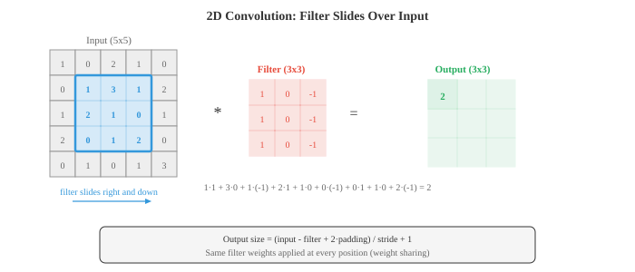
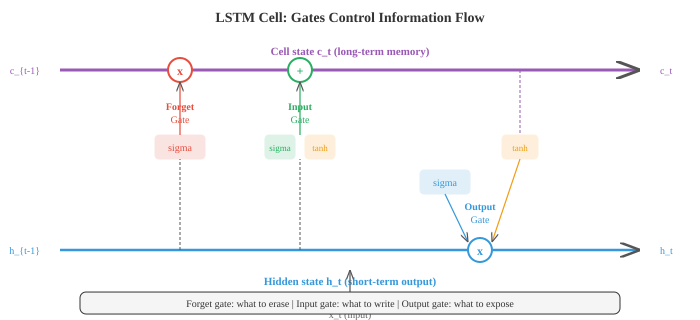

深度学习¶
一句话总结：深度学习靠堆叠非线性层来自动学出分层表示，本节串起 MLP、激活函数、反向传播、CNN、RNN/LSTM、注意力、Transformer、MoE、SSM/Mamba、自编码器/VAE 与归一化技术；扩散模型放到第 08、10 章里讲。
深度学习通过堆叠非线性层来构建分层表示，把原始输入自动转化为有用的特征。 本节涵盖多层感知机 (MLP)、激活函数、反向传播、卷积神经网络 (CNN)、循环神经网络 (RNN)、长短期记忆网络 (LSTM)、注意力、Transformer、专家混合 (MoE)、状态空间模型 (SSM/Mamba)、变分自编码器 (VAE) 以及各种归一化技术。 扩散模型 (diffusion models) 因为与具体模态生成流水线关系更紧，集中在第 08 章「视觉 Transformer 与生成」和第 10 章「跨模态生成」里介绍.
作者按: 我第一次真正"读懂"深度学习，不是在读论文的时候，而是在调不出一个 MLP 的时候。 那次我按教科书公式一步步实现，loss 死活不下降，排查半天才发现是权重初始化的方差差了一个数量级 — 前向传播的激活值一路指数级放大，反向传播的梯度直接爆掉。 那一刻我才明白，教材里那些看似次要的技巧 (初始化、归一化、残差、梯度裁剪) 其实才是把"堆很多层"从理论变成现实的关键。 后来我也把这个经验用在读现代架构上：每读到一个新模块 (LayerNorm、ResNet、Attention、MoE、Mamba)，我都先问一句"它是在解决哪个数值稳定性或计算复杂度的具体麻烦？". 你会发现深度学习的进步大多不是从"数学之美"里长出来的，而是从"这样堆会崩、那样堆不并行"这种非常工程化的痛点里长出来的。 所以本节我尽量把每一个组件配上"它出现的动机"，而不是只列公式 — 希望你读完能像调网络的老鸟那样，看到一个新架构就先猜它到底在治哪块疼。
-
什么让一个网络"深"？浅层网络只有一个隐藏层，深层网络则有很多层。 深度让网络能建立分层表示：靠前的层学习简单特征 (边缘、色调)，靠后的层把它们组合成复杂概念 (人脸、句子). 这种可组合性正是深度学习威力的来源。
-
最简单的深度网络是多层感知机 (Multi-Layer Perceptron, MLP)，也叫全连接网络或稠密网络。 每一层的计算是:
-
这里 \(W\) 是权重矩阵 (见第 02 章), \(b\) 是偏置向量，\(\sigma\) 是非线性激活函数。 一层的输出会成为下一层的输入。 如果没有非线性，堆再多层也没用：\(W_2(W_1 x) = (W_2 W_1)x\)，这不过是另一个线性变换。 这正是第 02 章讲过的矩阵乘法坍缩现象。
-
激活函数引入了让"深度"有意义的非线性。
-
ReLU (Rectified Linear Unit，修正线性单元): \(\text{ReLU}(x) = \max(0, x)\). 它是使用最广的激活函数。 计算快，正输入不饱和，还能产生稀疏激活 (很多神经元的输出恰好为零). 缺点是：负输入的神经元输出恒为零，一旦长期卡在那里，它就"死掉"了，不再学习。
-
Sigmoid: \(\sigma(x) = \frac{1}{1+e^{-x}}\)，把输入压到 \((0, 1)\) 之间。 用在二分类的输出层很合适，但用在隐藏层就麻烦：输入远离零时曲线几乎水平，梯度会消失。
-
Tanh: \(\tanh(x) = \frac{e^x - e^{-x}}{e^x + e^{-x}}\)，压到 \((-1, 1)\). 它以零为中心 (不像 sigmoid)，对梯度流更友好，但两端仍会有梯度消失。
-
GELU (Gaussian Error Linear Unit，高斯误差线性单元): \(\text{GELU}(x) = x \cdot \Phi(x)\)，其中 \(\Phi\) 是标准正态分布的累积分布函数。 它是 ReLU 的平滑近似，允许少量负值通过。 GPT 与 BERT 默认都用 GELU.
-
Swish: \(\text{Swish}(x) = x \cdot \sigma(x)\)，又一个平滑门控函数，实际表现和 GELU 差不多。

-
一个输入维度 \(d_{\text{in}}\)、输出维度 \(d_{\text{out}}\) 的稠密层有 \(d_{\text{in}} \times d_{\text{out}} + d_{\text{out}}\) 个参数 (权重加偏置). 矩阵乘 \(Wx\) 就是第 02 章讲的矩阵-向量乘法。 批处理时，输入是形状 \((B, d_{\text{in}})\) 的矩阵 \(X\)，输出是形状 \((B, d_{\text{out}})\) 的 \(XW^T + b\).
-
万能逼近定理 (universal approximation theorem) 说：一个隐藏层，只要神经元足够多，就能在紧致定义域上以任意精度逼近任何连续函数。 听上去深度似乎无所谓，但要点在于"足够多". 实际上，深层网络能用指数级更少的参数表示同样的函数。 深度带来的是效率，而不仅仅是表达力。
-
网络越深，就越容易撞上两种梯度病理。 梯度消失 (vanishing gradients)：梯度经过很多层 (通过第 03 章的链式法则) 时会被连乘很多次。 如果这些因子一直小于 1 (sigmoid、tanh 饱和时就会这样)，梯度就指数级缩向零，靠前的层几乎学不到东西。 梯度爆炸 (exploding gradients)：如果因子一直大于 1，梯度会指数级增长，引发数值溢出与训练不稳定。
-
解决梯度消失/爆炸的常见办法:
- 用 ReLU 或 GELU 激活 (正输入梯度为 1，不饱和)
- 精心的权重初始化
- 归一化层
- 残差连接 (跳跃连接)
-
梯度裁剪 (针对梯度爆炸)：把梯度范数限制在一个最大值以内
-
权重初始化 (weight initialisation) 之所以重要，是因为它决定了训练开始时激活和梯度的尺度。 权重太大会让激活爆炸，太小又会让它消失。
-
Xavier (Glorot) 初始化：从方差为 \(\frac{2}{d_{\text{in}} + d_{\text{out}}}\) 的分布中采样权重。 在假设线性或 tanh 激活时，它能让各层激活的方差大致保持不变。
-
He (Kaiming) 初始化：方差取 \(\frac{2}{d_{\text{in}}}\)，是为 ReLU 激活量身定制的 (因为 ReLU 会把一半激活置零，所以要用双倍方差来补偿).
-
归一化层 (normalisation layers) 让每一层的输入统计量保持稳定 (大致零均值、单位方差)，从而稳定训练。
-
批归一化 (Batch Normalisation, BatchNorm) 沿批维度做归一化：对每一个通道/特征，在小批中的所有样本上计算均值和方差，然后归一化。 它加入了可学习的缩放 (\(\gamma\)) 与平移 (\(\beta\)) 参数，这样网络在需要时可以撤销这次归一化:
-
BatchNorm 有个毛病：它依赖批大小。 批太小时统计量会很嘈杂。 推理时用的是运行时平均值而不是当前批统计量，这就带来了训练/测试的不一致。
-
层归一化 (Layer Normalisation, LayerNorm) 对每个样本独立地在特征维度上做归一化。 它不依赖批里其他样本，所以成了 Transformer 和循环网络的标配。
-
实例归一化 (Instance Normalisation) 对每个样本、每个通道独立地在空间维度上归一化，在风格迁移里很流行。
-
组归一化 (Group Normalisation) 把通道分成若干组，组内归一化。 它是 LayerNorm 与 InstanceNorm 之间的折中。

-
Dropout 是一种正则化技术：训练时随机把比例 \(p\) 的神经元置零。 这迫使网络不去依赖任何单个神经元，鼓励学习冗余表示。 测试时所有神经元都激活。 反向 Dropout (inverted dropout) 在训练时把激活乘以 \(\frac{1}{1-p}\)，这样测试时就不用再做缩放了。 这是标准实现。
-
卷积神经网络 (Convolutional Neural Network, CNN) 利用了空间结构。 它不像稠密层那样把每个输入连到每个输出，而是让一个小滤波器 (卷积核) 在输入上滑动，每滑到一个位置就计算一次点积。 同一个滤波器的权重在所有位置共享，这大幅减少了参数，并天然带来了平移不变性。
-
二维输入、大小为 \(k \times k\) 的滤波器 \(K\) 的卷积运算:

-
输出大小取决于三个超参数。 步长 (stride) 控制滤波器每次移动多少像素 (步长为 2 会把空间尺寸减半). 填充 (padding) 在输入边界外补零 ("same" 填充保持空间尺寸，"valid" 填充不保持). 输出尺寸公式：\(\text{out} = \lfloor (\text{in} - k + 2p) / s \rfloor + 1\).
-
池化 (pooling) 层对特征图做下采样。 最大池化取窗口内的最大值，平均池化取平均值。 池化在减小空间尺寸的同时，保留了最重要的信息。
-
膨胀卷积 (dilated convolutions) 在滤波器元素之间插入空隙，在不增加参数的情况下扩大感受野。 膨胀率为 2 时，3x3 的滤波器实际覆盖 5x5 的区域。
-
1x1 卷积就是滤波器大小为 1x1 的卷积。 它不看空间邻居，而是在通道之间混合信息。 你可以把它想成"在每个空间位置上分别做一次全连接". 它常用来廉价地改变通道数。
-
跳跃连接 (skip connections) 也叫残差连接，让输入绕过一层或多层：\(\text{output} = F(x) + x\). 这一层只需要学习残差 \(F(x) = \text{output} - x\)，而当最优变换接近恒等映射时，学残差更容易。 ResNet (残差网络) 靠这个技巧堆到了 100 多层，解决了"越深反而越差"的退化问题。
-
CNN 会构建特征层级 (feature hierarchy)：靠前的层探测边缘和纹理，中间的层把它们组合成部件 (眼睛、车轮)，靠后的层识别整体对象。 随着深度增加，每一层的感受野 (它能"看到"的输入区域) 也在扩大。
-
嵌入 (embeddings) 把离散 token (单词、字符、物品 ID) 映射到稠密向量。 一个嵌入层就是一个查找表：形状为 (词表大小，嵌入维度) 的矩阵 \(E\). 查询 token \(i\) 就是取 \(E\) 的第 \(i\) 行。 这等价于乘以一个 one-hot 向量，也就是第 02 章矩阵-向量乘法的一个特例。 嵌入是训练学出来的，所以相似的 token 会得到相似的向量。
-
分词 (tokenisation) 是把原始文本转成一串 token 的过程。 词级分词按空格切分，但遇到没见过的词就束手无策。 子词分词 (subword tokenisation) — 字节对编码 (Byte-Pair Encoding, BPE)、WordPiece、SentencePiece — 把文本切成常见子词单元，兼顾词表大小和覆盖率。 "unhappiness" 这个词可能会被切成 ["un", "happiness"] 或 ["un", "happ", "iness"].
-
循环神经网络 (Recurrent Neural Network, RNN) 一次处理序列的一个元素，用一个隐藏状态往前传递信息:
-
隐藏状态 \(h_t\) 是网络到时刻 \(t\) 为止所见到的一切的压缩摘要。 权重 \(W_h\) 与 \(W_x\) 在所有时间步共享 (权重共享，跟 CNN 在空间上共享权重是同一个思路).
-
原始 RNN 处理长序列时会因梯度消失而力不从心：从时间步 \(t\) 反传到时间步 \(t - k\)，梯度要连乘 \(k\) 次 \(W_h\)，结果指数级地缩小 (或爆炸).
-
LSTM (Long Short-Term Memory，长短期记忆网络) 用一个几乎不受干扰、沿时间流动的独立细胞状态 \(c_t\) 来解决这个问题。 三个门控制着信息的进、出与保留:
-
遗忘门 (forget gate) 决定要从细胞状态里擦掉什么：\(f_t = \sigma(W_f [h_{t-1}, x_t] + b_f)\)
- 输入门 (input gate) 决定要写入什么新信息：\(i_t = \sigma(W_i [h_{t-1}, x_t] + b_i)\)，候选值为 \(\tilde{c}_t = \tanh(W_c [h_{t-1}, x_t] + b_c)\)
- 细胞状态更新：\(c_t = f_t \odot c_{t-1} + i_t \odot \tilde{c}_t\)
- 输出门 (output gate) 决定要暴露什么：\(o_t = \sigma(W_o [h_{t-1}, x_t] + b_o)\), \(h_t = o_t \odot \tanh(c_t)\)

-
细胞状态就像一条传送带：只要遗忘门保持接近 1，信息就可以跨越很多时间步不受损地传递，从而解决了长距离依赖上的梯度消失问题。
-
GRU (Gated Recurrent Unit，门控循环单元) 把 LSTM 简化了一下：它把细胞状态与隐藏状态合并成一个，用两个门代替三个门 — 一个更新门 (合并遗忘门与输入门) 和一个重置门。 GRU 参数更少，效果常常和 LSTM 不相上下。
-
RNN (包括 LSTM) 的根本局限是顺序处理：必须先处理第 1 个 token，才能处理第 2 个，再第 3 个。 这既阻碍了并行化，又造成信息瓶颈 — 所有上下文都得挤过一个固定大小的隐藏状态。
-
注意力 (attention) 一举解决了这两个问题。 它不再把整段输入压成一个固定向量，而是让模型回头看所有输入位置，自行判断哪些位置对当前输出更相关。
-
现代的表述用查询、键、值 (queries, keys, values, Q, K, V). 你可以把它想成图书馆检索：你有一个查询 (你要找什么)，每本书都有键 (标签)，还有值 (真正的书内容). 你用查询去比对所有键，决定要取回哪些值。
-
缩放点积注意力 (scaled dot-product attention):
-
\(QK^T\) 计算的是每一个查询与每一个键之间的相似度。 这是一次矩阵乘 (第 02 章)，其中每一项都是点积，用来衡量余弦相似度 (第 01 章). 除以 \(\sqrt{d_k}\) 是为了防止点积变得太大 (太大会让 softmax 饱和，产生近似 one-hot 的分布，梯度也会消失). softmax 把相似度转成概率分布。 再乘以 \(V\)，就得到值的加权组合。
-
多头注意力 (multi-head attention) 并行跑 \(h\) 次注意力，每一次都用一组不同的、学到的 Q、K、V 投影。 这样模型可以同时从不同的表示子空间中提取信息。 一个头可能关注句法关系，另一个头则关注语义。 各头输出拼接后再做一次投影:
- Transformer 架构 (Vaswani 等，2017) 完全由注意力与前馈层构成，没有循环。 编码器块反复堆叠：多头自注意力 → 加法 & 层归一化 → 前馈网络 → 加法 & 层归一化。 解码器块多了一个带掩码的自注意力 (防止模型看到未来的 token) 和一个交叉注意力层 (它对编码器的输出做注意力).

- 位置编码 (positional encoding) 是必要的，因为注意力具有置换等变性 — 它把输入当作集合而非序列。 没有位置信息，"the cat sat on the mat" 和 "the mat sat on the cat" 对它来说完全一样。 原版 Transformer 用的是正弦位置编码:
-
每个位置都拿到一个独特的向量，模型据此区分位置。 现代模型更常用可学习的位置嵌入或相对位置编码 (RoPE、ALiBi).
-
Transformer 可以并行处理所有 token (自注意力矩阵 \(QK^T\) 只需一次矩阵乘)，在现代硬件上比 RNN 训练快得多。 代价是自注意力在序列长度上是 \(O(n^2)\) (每个 token 要注意所有其他 token)，而 RNN 是 \(O(n)\). 这也是为什么长上下文模型需要特殊的注意力变体 (稀疏注意力、线性注意力、FlashAttention).
-
到 2025~2026 年，长上下文这场仗打得很凶。 FlashAttention-2 (Dao, 2023) 与 FlashAttention-3 (Shah 等，2024) 用分块 (tiling) 和重计算把注意力 IO 从 HBM 挪到 SRAM，在 H100 上单卡就能推到 700+ TFLOPs 的 FP16 利用率。 Gemini 1.5 Pro (Google, 2024) 商用上把上下文推到 100 万 token，后续版本进一步扩展到 200 万；Claude 3.5 Sonnet (Anthropic, 2024) 与 GPT-4o 稳定在 20 万左右；而 DeepSeek-V3 (2024 年底发布) 与开源侧的 Llama 3.1/3.2 也把 128K 上下文做成了标配。 RoPE (Rotary Position Embedding) 加 YaRN、NTK-aware scaling 这类外推方法几乎成了长上下文模型的默认位置编码方案。
-
视觉 Transformer (Vision Transformer, ViT) 把 Transformer 用到图像上：把图像切成固定大小的图块 (比如 16x16)，每个图块展平成向量，然后把这些图块当作一串 token. 在序列前面加一个可学习的 [CLS] token，用它最终的表示做分类。 尽管 ViT 没有卷积那种归纳偏置，但只要训练数据足够多，它就能追平甚至超越 CNN.
-
MLP-Mixer 是一种更简单的架构，它用 MLP 同时替换掉了注意力和卷积。 它在"token 混合" MLP (跨空间位置作用) 与"通道混合" MLP (跨特征作用) 之间交替。 它的表现同样有竞争力，这暗示现代架构的关键洞见并不在注意力本身，而在于如何在 token 与特征之间高效地混合信息.
专家混合 (Mixture of Experts, MoE)¶
-
把 Transformer 的前馈网络 (FFN) 换成多个并行"专家"子网络，就得到了 专家混合 (Mixture of Experts, MoE). 每个 token 只激活少数几个专家 (通常是 Top-2)，而不是用全部参数，因此总参数量可以做得巨大，但每个 token 的实际计算量 (FLOPs) 却增长有限。
-
核心机制是一个学习到的 路由器 (router / gate)：给定 token 表示 \(x\)，路由器给每个专家打分，然后选分数最高的 \(k\) 个专家，加权组合它们的输出:
-
其中 \(g(x) = \text{softmax}(\text{TopK}(W_g \cdot x))\) 是门控权重，TopK 只保留最大的 \(k\) 个值，其余归零。
-
MoE 的关键工程挑战是负载均衡 (load balancing). 如果路由器总是选同一批专家，其他专家就"饿死"了，硬件利用率也暴跌。 解决方法通常是加一个辅助损失，鼓励每个专家均匀地收到 token；或者反过来用专家来选 token (expert-choice routing).
-
Switch Transformer (Fedus 等，2021, Google) 是 MoE 走向大规模的关键一步。 它只用 Top-1 路由 (每个 token 只激活一个专家)，把 T5 模型扩展到 1.6 万亿参数，训练效率比稠密 T5 高 7 倍。 它引入了"容量因子"来控制每个专家最多能处理多少 token，超出部分直接丢弃，保证了计算负载的确定性。
-
Mixtral 8x7B (Mistral AI, 2023) 是 MoE 在开源社区引爆的标志。 它用 Top-2 路由，总参数量 46.7B，但每个 token 只激活 12.9B 参数 (于是叫"8x7B")，推理成本约等于一个 13B 的稠密模型。 在当时 (2023 年底) 的基准测试中，Mixtral 8x7B 全面超越了 GPT-3.5 和 Llama 2 70B.
-
DeepSeek-V2 (DeepSeek, 2024) 把 MoE 推到更深。 它引入了共享专家 (shared expert) 与细粒度专家分割 (fine-grained expert segmentation) — 每个专家不再是完整的大 FFN，而是切成更小的单元，方便更灵活地组合。 DeepSeek-V3 (2024 年底) 把总参数量做到了 671B，其中 MoE 部分包含 1 个共享专家 + 256 个路由专家，每个 token 激活约 37B 参数。 它用 FP8 训练、多 token 预测 (MTP) 等工程优化，在 278.8 万 H800 GPU 小时上训练完成，成本约 557 万美元 — 远低于同期其他万亿级模型的训练开销。 在 2025 年初，DeepSeek-V3 (以及基于它的推理增强版 DeepSeek-R1) 是开源阵营里最接近 GPT-4o 和 Claude 3.5 Sonnet 的模型。
-
MoE 现已成 2025~2026 年大模型的主流架构选择：大多数开源或闭源的超大模型 (GPT-4 系列、Gemini 系列、Qwen 2.5-MoE、DeepSeek 系列) 都在不同程度上采用或结合了 MoE 设计。 它的核心优势是用稀疏激活换取参数规模，在单次推理的 FLOP 预算内塞进更多的总知识。
状态空间模型 (State Space Models, SSM) 与 Mamba¶
-
除了 Transformer 和 MoE, 2023~2024 年还冒出了另一条值得关注的序列建模路线：状态空间模型 (State Space Models, SSM). SSM 的灵感来自控制论里的线性时不变系统 — 它用连续时间的微分方程描述一个隐藏状态随着输入如何演化，然后离散化成递归形式，处理序列数据。
-
经典 SSM 的核心方程:
-
离散化后 (用零阶保持或双线性变换把 \(A, B\) 变成 \(\bar{A}, \bar{B}\)): \(h_t = \bar{A} h_{t-1} + \bar{B} x_t\), \(y_t = C h_t\). 这看起来和 RNN 很像，但关键区别在于 \(A\) 是结构化矩阵 (如对角线加低秩)，这让 SSM 可以同时用卷积模式高效并行训练 (输入序列一次性做卷积，类似 CNN) 和递归模式做连续推理 (每个 token 常数时间，\(O(1)\) 而非 Transformer 的 \(O(n^2)\)).
-
S4 (Structured State Space for Sequences) (Gu 等，2022, CMU/Stanford) 是这条线的突破。 它用 HiPPO 矩阵初始化 \(A\)，让状态空间理论上能记住无限长的历史，解决了标准 RNN 和普通 SSM 在长距离依赖建模上的根本困难。 S4 在 Long Range Arena (LRA) 基准上第一次全面超越了 Transformer.
-
Mamba (Gu 和 Dao, 2023, CMU/Princeton) 是 SSM 路线的"GPT 时刻". 它把 S4 的线性时不变结构升级为选择性 (selective) 机制：\(B\)、\(C\) 和步长 \(\Delta\) 不再是固定的，而是根据当前输入动态变化。 这样模型就能学会"这个 token 重要，多读一点；那个 token 不重要，跳过" — 相当于在状态空间里内建了类注意力机制，但不需要 \(O(n^2)\) 的 pairwise 计算。
-
Mamba-2 (Dao 和 Gu, 2024) 进一步揭示了 SSM 的结构化矩阵半可分性质，证明了选择性 SSM 在数学上与线性注意力是同一框架的不同特例。 它用 GPU 优化的块状矩阵乘法来完成训练，在长序列上比 Mamba-1 更快。
-
到 2025~2026 年，SSM/Mamba 的定位逐渐清晰：它不太可能完全替代 Transformer，但作为长序列高效编码器很有前景。 一个典型方向是混合架构 — 用 SSM 处理长序列的前处理或中间层，再用 Transformer 注意力做关键的跨位置交互。 例如 Jamba (AI21 Labs, 2024) 和 Zamba 2 把 Mamba 层与 Transformer 层交替堆叠，在 256K 上下文上实现了比纯 Transformer 更低的推理延迟。
-
除了文本，SSM 也在基因组学 (DNA 序列长到几百万 bp)、音频、时间序列预测等领域找到了用武之地。 如果你的场景是"序列极长 + 推理需要低延迟", SSM/Mamba 值得关注。
-
自编码器 (autoencoder) 通过训练一个网络重建自身输入，来学习压缩表示。 编码器把输入映射到一个更低维的瓶颈 (潜编码)，解码器再把它映射回去:
-
瓶颈迫使网络学到最重要的特征。 自编码器可用于降维、去噪 (用带噪输入训练，输出干净版本) 以及异常检测 (重建误差高就说明输入不寻常).
-
变分自编码器 (Variational Autoencoder, VAE) 加入了概率化的转折。 编码器不再把输入编码成一个单点 \(z\)，而是输出一个分布的参数 (高斯分布的均值 \(\mu\) 与方差 \(\sigma^2\)). 潜编码从这个分布里采样：\(z = \mu + \sigma \odot \epsilon\)，其中 \(\epsilon \sim \mathcal{N}(0, I)\). 这一重参数化技巧 (reparameterisation trick) 让采样可微，梯度就能穿过它流动。
-
VAE 的损失有两项:
-
KL 散度 (Kullback-Leibler divergence, KL divergence) 一项 (第 05 章) 会把学到的后验 \(q(z|x)\) 推向先验 \(p(z) = \mathcal{N}(0, I)\)，从而保证潜空间光滑且结构良好。 训练完后，你就可以从先验里采样，再解码生成新样本。 这正是 VAE 之所以是生成模型的原因。
-
扩散模型 (diffusion models) 是另一类重要的生成模型，但它的核心工作流 (正向加噪、反向去噪、DDPM、Stable Diffusion、DiT 等) 与具体的模态生成流水线 (文本到图像、图像到视频、多模态生成) 关系更紧密。 因此我们把扩散模型的详细内容放到了第 08 章「视觉 Transformer 与生成」和第 10 章「跨模态生成」里。 如果只想快速了解扩散的核心直觉：它就像学怎么把一张被噪声搅得面目全非的图一步步"擦干净" — 模型学的是反向去噪过程，训练完以后从纯噪声出发，逐步去噪，得到一张逼真的图像。
反方观点：深度学习并非终局¶
- 到这里为止，我们几乎默认了"更大、更深、更多参数 = 更强"的叙事。 但社区里始终有一股不小的反声，值得单独拎出来听一听。
- 深度学习 vs 经典机器学习的钟摆. 在表格数据 (tabular data) 这个至今仍是工业界主战场的场景里，XGBoost、LightGBM、CatBoost 等梯度提升树模型在 2020~2025 年间的大量基准测试 (Shwartz-Ziv 与 Armon 2022 的对照实验、Grinsztajn 等 2022 的系统综述) 上依旧稳压深度网络：训练更快、超参更省、可解释性更好、对分布外数据更稳健。 一部分研究者 (如 Léo Grinsztajn、Gaël Varoquaux) 直言，深度学习在图像、语音、文本这些"感知类"任务上确实碾压了传统方法，但对结构化数据，树模型的归纳偏置恰好更贴近现实，而神经网络的通用性反而成了负担。 钟摆是否会回摆，目前仍有争议。
- Scaling law 的怀疑派. Chinchilla (Hoffmann 等，2022) 以来，"更多算力 + 更多数据 = 更低 loss"的经验规律成了行业圣经。 但 Sasha Rush、François Chollet、Gary Marcus 等人反复指出：(1) scaling law 只保证 loss 下降，不保证能力同比例增长，具体到推理、规划、事实性这些下游任务，曲线经常出现拐点甚至倒退；(2) 高质量训练数据总有上限，到 2024~2025 年公开互联网文本已被主流大模型"吃干净"，合成数据能否持续替代仍未定论；(3) 单位算力/单位电力的边际收益在快速衰减，GPT-4 到 GPT-5 级别的跳跃，训练成本是数量级增长，而实际用户感知的提升远小于此。
- 架构层面的反思. LeCun 长期主张 LLM 只是"高级自动补全"，缺少世界模型与规划能力；Chollet 用 ARC 基准反复展示当前大模型在需要少样本抽象推理的任务上仍远不如人类。 这些声音不否认深度学习的成就，而是提醒：目前的路线在"表征学习"这一维度非常成功，但在"因果、规划、系统 2 思维"这些维度可能需要新的范式突破 (神经符号、程序合成、显式记忆等)，而不只是继续加参数。
- 把这些反方意见列出来，不是要否定本节内容，而是希望读者在追热点时保留一根警觉的神经：技术路线的胜负往往在几年内反转，今天看似过时的经典方法 (树模型、贝叶斯方法、符号系统) 完全可能在下一波场景里回归主角。
编码任务 (可用 CoLab 或 Notebook)¶
-
用 JAX 从零搭一个简单 MLP. 在一个二维分类问题上训练它 (比如同心圆)，并可视化决策边界。
import jax import jax.numpy as jnp import matplotlib.pyplot as plt from sklearn.datasets import make_circles # 数据 X, y = make_circles(n_samples=500, noise=0.1, factor=0.5, random_state=42) X, y = jnp.array(X), jnp.array(y, dtype=jnp.float32) # 初始化一个 2 层 MLP: 2 -> 16 -> 16 -> 1 def init_params(key): k1, k2, k3 = jax.random.split(key, 3) return { 'W1': jax.random.normal(k1, (2, 16)) * 0.5, 'b1': jnp.zeros(16), 'W2': jax.random.normal(k2, (16, 16)) * 0.5, 'b2': jnp.zeros(16), 'W3': jax.random.normal(k3, (16, 1)) * 0.5, 'b3': jnp.zeros(1), } def forward(params, x): h = jnp.maximum(0, x @ params['W1'] + params['b1']) # ReLU h = jnp.maximum(0, h @ params['W2'] + params['b2']) # ReLU logit = (h @ params['W3'] + params['b3']).squeeze() return jax.nn.sigmoid(logit) def loss_fn(params, X, y): pred = forward(params, X) return -jnp.mean(y * jnp.log(pred + 1e-7) + (1 - y) * jnp.log(1 - pred + 1e-7)) grad_fn = jax.jit(jax.grad(loss_fn)) params = init_params(jax.random.PRNGKey(0)) lr = 0.1 for step in range(2000): grads = grad_fn(params, X, y) params = {k: params[k] - lr * grads[k] for k in params} # 绘制决策边界 xx, yy = jnp.meshgrid(jnp.linspace(-2, 2, 200), jnp.linspace(-2, 2, 200)) grid = jnp.column_stack([xx.ravel(), yy.ravel()]) zz = forward(params, grid).reshape(xx.shape) plt.figure(figsize=(7, 6)) plt.contourf(xx, yy, zz, levels=[0, 0.5, 1], alpha=0.3, colors=['#e74c3c', '#3498db']) plt.scatter(X[y==0,0], X[y==0,1], c='#e74c3c', s=10, label='Class 0') plt.scatter(X[y==1,0], X[y==1,1], c='#3498db', s=10, label='Class 1') plt.title("MLP Decision Boundary on Concentric Circles") plt.legend(); plt.grid(alpha=0.3); plt.show() acc = jnp.mean((forward(params, X) > 0.5) == y) print(f"Accuracy: {acc:.2%}") -
从零实现一维卷积。 对一段信号应用一个简单的边缘检测滤波器，并与内置的
jnp.convolve对比。import jax.numpy as jnp import matplotlib.pyplot as plt def conv1d(signal, kernel): """从零实现的一维卷积 (valid 模式).""" n, k = len(signal), len(kernel) output = jnp.zeros(n - k + 1) for i in range(n - k + 1): output = output.at[i].set(jnp.sum(signal[i:i+k] * kernel)) return output # 造一段含阶跃的信号 t = jnp.linspace(0, 4, 200) signal = jnp.where(t < 1, 0.0, jnp.where(t < 2, 1.0, jnp.where(t < 3, 0.5, 1.5))) # 边缘检测卷积核 edge_kernel = jnp.array([-1.0, 0.0, 1.0]) # 我们的实现 vs 内置实现 our_output = conv1d(signal, edge_kernel) jnp_output = jnp.convolve(signal, edge_kernel, mode='valid') fig, axes = plt.subplots(3, 1, figsize=(10, 6), sharex=True) axes[0].plot(t, signal, color='#3498db', linewidth=1.5) axes[0].set_title("Original Signal"); axes[0].set_ylabel("Value") axes[1].plot(t[:len(our_output)], our_output, color='#e74c3c', linewidth=1.5) axes[1].set_title("After Edge Detection (our conv1d)"); axes[1].set_ylabel("Value") axes[2].plot(t[:len(jnp_output)], jnp_output, color='#27ae60', linewidth=1.5, linestyle='--') axes[2].set_title("After Edge Detection (jnp.convolve)"); axes[2].set_ylabel("Value") axes[2].set_xlabel("t") plt.tight_layout(); plt.show() print(f"Outputs match: {jnp.allclose(our_output, jnp_output)}") -
从零实现缩放点积注意力。 对一个小例子计算注意力权重，并把注意力矩阵画成热力图。
import jax import jax.numpy as jnp import matplotlib.pyplot as plt def scaled_dot_product_attention(Q, K, V): """缩放点积注意力.""" d_k = Q.shape[-1] scores = Q @ K.T / jnp.sqrt(d_k) weights = jax.nn.softmax(scores, axis=-1) output = weights @ V return output, weights # 示例: 4 个 token, 嵌入维度 8 key = jax.random.PRNGKey(42) k1, k2, k3 = jax.random.split(key, 3) seq_len, d_model = 4, 8 Q = jax.random.normal(k1, (seq_len, d_model)) K = jax.random.normal(k2, (seq_len, d_model)) V = jax.random.normal(k3, (seq_len, d_model)) output, weights = scaled_dot_product_attention(Q, K, V) print(f"Q shape: {Q.shape}") print(f"Attention weights shape: {weights.shape}") print(f"Output shape: {output.shape}") print(f"\nAttention weights (rows sum to 1):") print(weights) print(f"Row sums: {weights.sum(axis=-1)}") # 可视化注意力 fig, ax = plt.subplots(figsize=(5, 4)) im = ax.imshow(weights, cmap='Blues', vmin=0, vmax=1) ax.set_xlabel("Key position"); ax.set_ylabel("Query position") ax.set_title("Attention Weights") tokens = ['tok 0', 'tok 1', 'tok 2', 'tok 3'] ax.set_xticks(range(4)); ax.set_xticklabels(tokens) ax.set_yticks(range(4)); ax.set_yticklabels(tokens) for i in range(4): for j in range(4): ax.text(j, i, f"{weights[i,j]:.2f}", ha='center', va='center', fontsize=10) plt.colorbar(im); plt.tight_layout(); plt.show() -
搭一个简单自编码器，把二维数据经过一维瓶颈压缩后再重建。 可视化潜空间与重建结果。
import jax import jax.numpy as jnp import matplotlib.pyplot as plt from sklearn.datasets import make_moons # 数据 X, _ = make_moons(n_samples=500, noise=0.05, random_state=42) X = jnp.array(X) # 自编码器: 2 -> 8 -> 1 -> 8 -> 2 def init_ae(key): k1, k2, k3, k4 = jax.random.split(key, 4) return { 'enc_W1': jax.random.normal(k1, (2, 8)) * 0.5, 'enc_b1': jnp.zeros(8), 'enc_W2': jax.random.normal(k2, (8, 1)) * 0.5, 'enc_b2': jnp.zeros(1), 'dec_W1': jax.random.normal(k3, (1, 8)) * 0.5, 'dec_b1': jnp.zeros(8), 'dec_W2': jax.random.normal(k4, (8, 2)) * 0.5, 'dec_b2': jnp.zeros(2), } def encode(p, x): h = jnp.tanh(x @ p['enc_W1'] + p['enc_b1']) return h @ p['enc_W2'] + p['enc_b2'] def decode(p, z): h = jnp.tanh(z @ p['dec_W1'] + p['dec_b1']) return h @ p['dec_W2'] + p['dec_b2'] def ae_loss(p, X): z = encode(p, X) X_hat = decode(p, z) return jnp.mean((X - X_hat) ** 2) grad_fn = jax.jit(jax.grad(ae_loss)) params = init_ae(jax.random.PRNGKey(0)) lr = 0.01 for step in range(3000): grads = grad_fn(params, X) params = {k: params[k] - lr * grads[k] for k in params} z = encode(params, X) X_hat = decode(params, z) fig, axes = plt.subplots(1, 2, figsize=(12, 5)) axes[0].scatter(X[:,0], X[:,1], c=z.squeeze(), cmap='viridis', s=10) axes[0].set_title("Original Data (coloured by latent code)") axes[1].scatter(X_hat[:,0], X_hat[:,1], c=z.squeeze(), cmap='viridis', s=10) axes[1].set_title("Reconstruction from 1D bottleneck") for ax in axes: ax.set_aspect('equal'); ax.grid(alpha=0.3) plt.tight_layout(); plt.show() print(f"Reconstruction MSE: {ae_loss(params, X):.4f}")
📌 本节要点¶
- 深度的意义：堆叠非线性层构建分层表示，用指数级更少参数逼近函数，效率而非表达力。
- 激活函数: ReLU 快且稀疏但会死亡；Sigmoid/Tanh 易饱和；GELU/Swish 是 GPT/BERT 的平滑默认。
- 梯度病理：深网络易梯度消失或爆炸，靠 ReLU、He/Xavier 初始化、归一化、残差与梯度裁剪解决。
- 归一化选型: BatchNorm 依赖批大小，LayerNorm 独立于批是 Transformer 的标配，Instance/Group 用于视觉与小批场景。
- CNN 核心：卷积核权重共享带来平移不变性，步长/填充/膨胀决定几何，1x1 卷积廉价换通道数。
- 残差连接：学残差 \(F(x)=\text{output}-x\) 比学恒等映射容易，让 ResNet 可以堆过百层。
- RNN 与门控：顺序处理+固定隐藏状态成瓶颈；LSTM/GRU 用门与细胞状态传送带解决长距离依赖。
- 注意力与 Transformer: Q/K/V 让每个 token 直接看到全局，缩放点积 + 多头 + 位置编码构成 Transformer 基础。
- 架构启示: ViT 与 MLP-Mixer 表明现代架构关键在"高效混合 token 与特征"，不必局限于注意力。
- MoE 稀疏化: Switch Transformer / Mixtral 8x7B / DeepSeek-V3 用 Top-K 路由把总参数量做大但激活量做小，已成 2025~2026 年超大模型主流。
- SSM/Mamba：用结构化状态空间实现 \(O(n)\) 长序列建模，与 Transformer 混合 (如 Jamba) 用于超长上下文场景。
- 自编码器与 VAE：瓶颈学压缩表示；VAE 用重参数化 + KL 正则化潜空间，成为可采样的生成模型。
- 扩散模型的位置：核心方法与图像/视频/多模态生成流水线绑定紧，详见第 08 章与第 10 章。